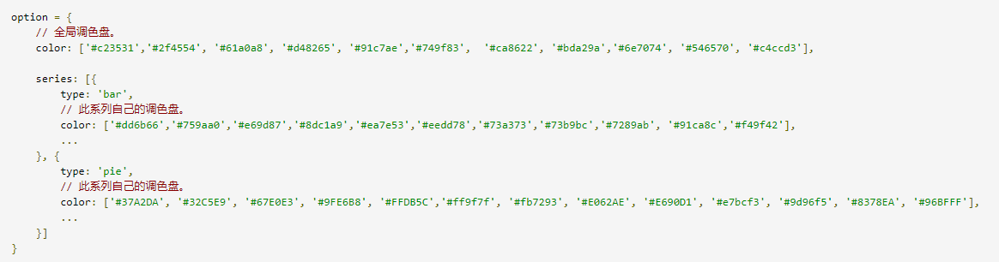
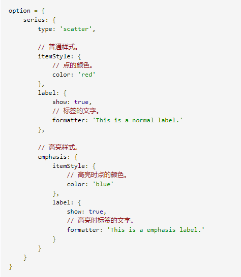
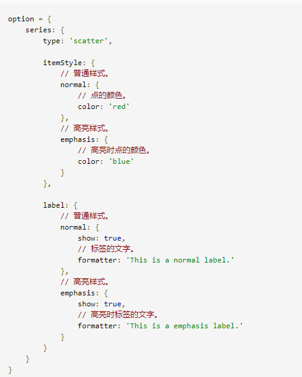
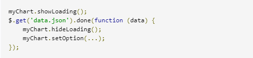

饼图主要是通过扇形的弧度表现不同类目的数据在总和中的占比，它的数据格式比柱状图更简单，只有一维的数值，不需要给类目。 因为不在直角坐标系上，所以也不需要xAxis，yAxis。ECharts 中的饼图也支持通过设置 roseType 显示成南丁格尔图。 roseType: 'angle'
阴影的配置: ECharts 中有一些通用的样式，诸如阴影、透明度、颜色、边框颜色、边框宽度等，这些样式一般都会在系列的 itemStyle 里设置。
itemStyle的emphasis是鼠标 hover 时候的高亮样式，可能更多的时候是 hover 的时候通过阴影突出。
深色背景和浅色标签 把整个主题改成开始的示例中那样的深色主题，这就需要改背景色和文本颜色; 背景色是全局的，所以直接在 option 下设置 backgroundColor; 文本的样式可以设置全局的 textStyle; 也可以每个系列分别设置，每个系列的文本设置在 label.textStyle；跟itemStyle一样，label和labelLine的样式也有emphasis状态； 饼图的话还要将标签的视觉引导线的颜色设为浅色。
设置扇形的颜色： ECharts 中每个扇形颜色的可以通过分别设置 data 下的数据项实现，扇形的颜色也是在 itemStyle 中设置；
因为只有明暗度的变化，所以有一种更快捷的方式是通过 visualMap 组件将数值的大小映射到明暗度（option.visualMap）
最简单的更改全局样式的方式，是直接采用颜色主题（theme）；
ECharts4 开始新内置了两套主题，分别为 'light' 和 'dark'。使用方法：
var chart = echarts.init(dom, 'light'); 或者
var chart = echarts.init(dom, 'dark');
调色盘，可以在 option 中设置。它给定了一组颜色，图形、系列会自动从其中选择颜色。 可以设置全局的调色盘，也可以设置系列自己专属的调色盘。 
直接的样式设置是比较常用设置方式。纵观 ECharts 的 option 中，很多地方可以设置 itemStyle、lineStyle、areaStyle、label 等等。这些的地方可以直接设置图形元素的颜色、线宽、点的大小、标签的文字、标签的样式等等。 一般来说，ECharts 的各个系列和组件，都遵从这些命名习惯，虽然不同图表和组件中，itemStyle、label 等可能出现在不同的地方。
在鼠标悬浮到图形元素上时，一般会出现高亮的样式，默认情况下，高亮的样式是根据普通样式自动生成的。
高亮的样式也可以自己定义，主要是通过 emphasis 属性来定制。
emphsis 中的结构:

注意：在 ECharts4 以前，高亮和普通样式的写法，是这样的：（现在不推荐使用）

ECharts 中实现异步数据的更新：
(1)在图表初始化后不管任何时候只要通过 jQuery 等工具异步获取数据后通过 setOption 填入数据和配置项就行。
(2)先设置完其它的样式，显示一个空的直角坐标轴，然后获取数据后填入数据。
ECharts 默认有提供了一个简单的加载动画。只需要调用 showLoading 方法显示。数据加载完成后再调用 hideLoading 方法隐藏加载动画。

ECharts 由数据驱动，数据的改变驱动图表展现的改变,所有数据的更新都通过 setOption实现，你只需要定时获取数据，setOption 填入数据，而不用考虑数据到底产生了那些变化，ECharts 会找到两组数据之间的差异然后通过合适的动画去表现数据的变化。
ECharts 3 中移除了 ECharts2 中的 addData 方法。如果只需要加入单个数据，可以先 data.push(value) 后 setOption